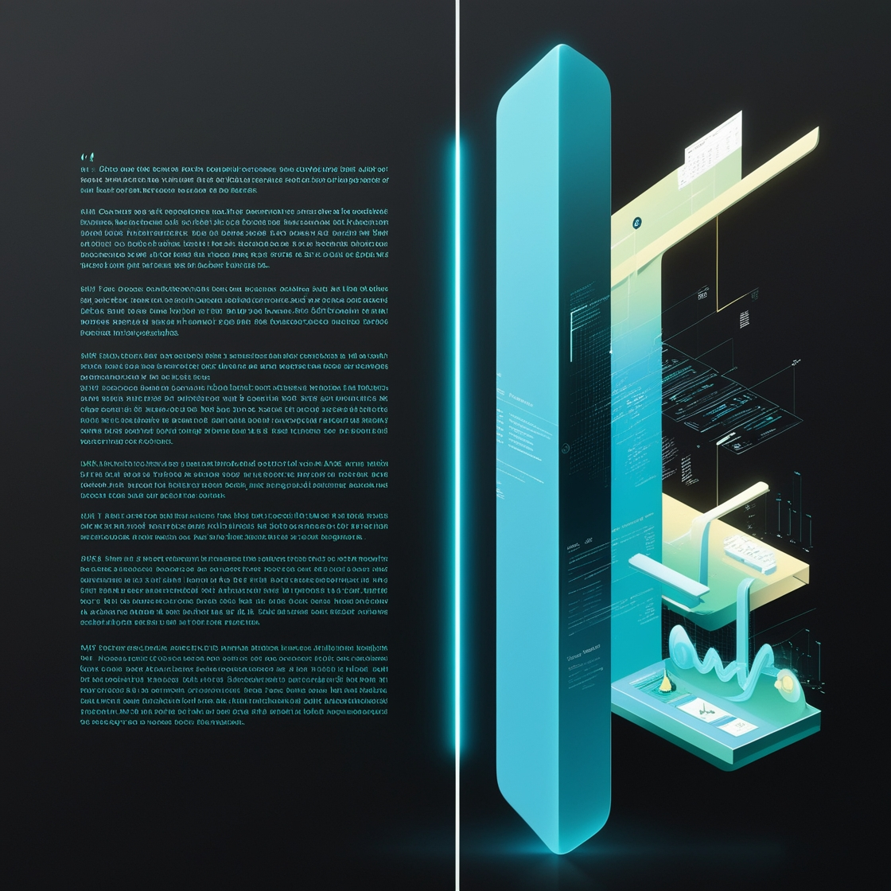

SAM HASAN-SILVA
Computer Scientist
My Expertise
Data Analysis
SQL, Python, Spark, AWS, Excel, R
Artificial Intelligence
Machine Learning, Deep Learning, NLP, Computer Vision, Data Science
Software Engineering
Java, Git, HTML, CSS, JavaScript, React, Next.js
Projects

Weapon Detection using Deep Learning

Predicting Passenger Fate with Logistic Regression

Market Analysis Utilizing the Youtube API and NLP
A Budgeting App that will revolutionize finance foreverS